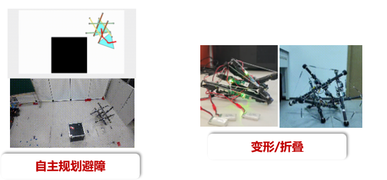
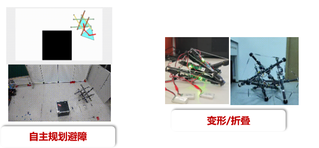
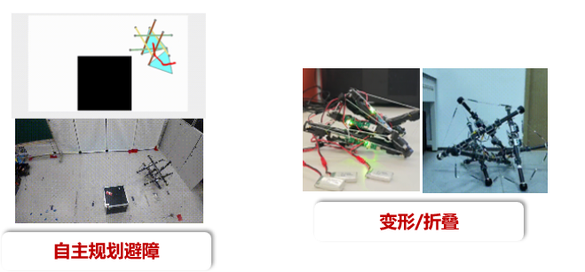

The application of Large Language Models (LLMs) in the field of robotics lies at its core in endowing traditional robotic control systems with the general knowledge, commonsense reasoning, and logical planning capabilities inherent in LLMs. Its primary objective is to achieve a paradigm shift鈥攆rom the rule-driven "perception-decision-control" paradigm to a "cognition-understanding-reasoning" paradigm that more closely approximates human thinking.
Taking the autonomous vehicle system as an example, specifically, LLMs, in the behavioral decision-making phase, can understand the intentions of various traffic participants in edge cases and generate human-like interactive behaviors. In the low-level control phase, when combined with traditional control models, LLMs can translate high-level decisions and even human instructions into control commands that exhibit greater environmental adaptability while ensuring safety.
